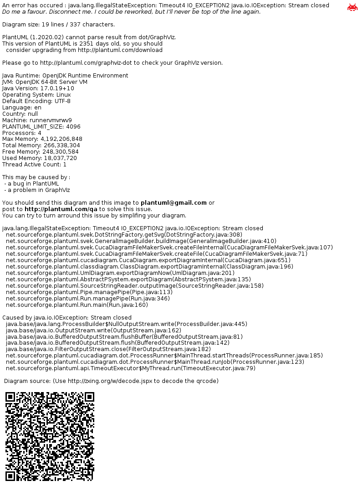

For Developers / Advanced Users¶
States And Connections¶
The basic principles of muting, monitoring, recording, playing back etc. are straightforward. However, in the case of a dry/wet combined looping setup, these principles can get confusing and/or impossible to implement perfectly, given that only a single FX processor exists.
For example, it is not possible to re-record the dry audio of multiple loops into their respective wet audio channels if they are sharing the same track (and thus the same FX processor). Their wet audio would be combined. Likewise, it is not possible to monitor the input while re-recording a loop.
Therefore some compromises have been made to select what is probably the most desirable wiring for each state of loop(s) and monitoring.
The following diagrams show the internal wiring of ShoopDaLoop’s ports and loops, including which signal paths are disabled / silent in different track/loop states.

Connections in different states.¶
Lua Scripting¶
Introduction¶
ShoopDaLoop supports embedded Lua scripts for querying and controlling the application. For example, these are used to define how ShoopDaLoop reacts to control MIDI events.
Lua scripts can be provided by the user and don’t require a re-installation of the software. Native egui builds run the same bundled libraries, keyboard.lua, and APC Mini script as the retained QML frontend. Each script has an isolated Lua state owned by the application actor; stopping or restarting it removes its callbacks, timers, MIDI rules, connections, and queued output.
Lua inside ShoopDaLoop is sandboxed for compatibility and to keep scripts isolated, making a large part of the standard library unavailable. Only a whitelisted list of functions can be used. See sandbox.lua for details. Most notably, arbitrary modules cannot be imported through require; only ShoopDaLoop-provided modules can be used. Scripts should nevertheless be treated as trusted local code rather than as a hardened security boundary.
Native egui script management¶
Open Settings and select the Scripts tab to inspect lifecycle state, errors, help text, callback/timer activity, logs, and MIDI diagnostics. This is the only script-management surface: it can enable, stop, restart, add, reload, and remove user scripts. Bundled startup toggles and the ordered user path/enabled list are stored in the native shoop-egui-settings document. Persistent edits apply only after Save; Stop, Restart, and Reload affect the runtime without changing the draft. Only keyboard.lua is enabled on first run. The egui app does not import retained QML script_settings.1. Source-bearing scripts inside a .shoop session are syntax-checked before session commit and are saved back with that session; machine paths are never embedded implicitly.
Native MIDI autoconnect uses an anchored full-name regular expression. Logical inputs connect to matching external outputs, and logical outputs connect to matching external inputs. Discovery is hotplug-aware, queues are bounded, and positive output-rate limits are enforced per logical output without delayed-pump catch-up bursts. Per-rule patterns, matched and connected endpoint names, and latest failures are published alongside aggregate connection, error, and drop counters. Connection, send, regex, queue-drop, and callback failures remain visible in script status. Stopping a script closes everything it owns.
Browser builds target wasm32-unknown-unknown and intentionally do not link mlua, native MIDI, or shoop_scripting. Their Settings dialog omits the Scripts tab, and script-bearing sessions are capability-rejected rather than partially executed.
API and Libraries¶
The API consists of globally available functions and constants, in addition to functions and constants available through built-in libraries. Built-in libraries should be included in scripts using the require function. Check src/lua/builtins/keyboard.lua for an example.
Globally available APIs¶
print(msg), print_debug(msg), print_error(msg), print_info(msg): Print a message to the Frontend.LuaScript logger. Respective log levels are info (default), debug, error.
module: shoop_control¶
Provides basic interfacing with ShoopDaLoop. Note that these functions are provided as bindings into the application - they are not written in Lua.
- shoop_control.loop_count(loop_selector) -> int
Count the amount of loops given by the selector.
- shoop_control.loop_get_all() -> [[x1,y1],[x2,y2],…]
Get the coordinates of all loops.
- shoop_control.loop_get_which_selected() -> [[x1,y1],[x2,y2],…]
Get the coordinates of all currently selected loops.
- shoop_control.loop_get_which_targeted() -> [x,y] | nil
Get the coordinates of the currently targeted loop, or None if none are targeted.
- shoop_control.loop_get_by_mode(mode) -> [[x1,y1],[x2,y2],…]
Get the coordinates of all loops with the given mode.
- shoop_control.loop_get_mode(loop_selector) -> list[LoopMode]
Get the current mode of the specified loops.
- shoop_control.loop_get_next_mode(loop_selector) -> list[ LoopMode or nil ]
For the specified loops, get the upcoming mode transition, if any.
- shoop_control.loop_get_next_mode_delay(loop_selector) -> list[ int or nil ]
For the specified loops, get the upcoming mode transition delay in cycles, if any.
- shoop_control.loop_get_length(loop_selector) -> list[int]
Get the length of the specified loops in samples.
- shoop_control.loop_get_by_track(track) -> [[x1,y1],[x2,y2],…]
Get the coordinates of all loops with the given mode.
- shoop_control.loop_transition(loop_selector, mode, maybe_cycles_delay, maybe_align_to_sync_at)
Transition the given loops. Pass shoop_control.constants.Loop_DontWaitForSync and shoop_control.constants.Loop_DontAlignToSyncImmediately to maybe_cycles_delay and maybe_align_to_sync_at respectively, to disable them.
- shoop_control.loop_trigger(loop_selector, mode)
Trigger the loop with the given mode. Equivalent to pressing the loop’s button in the UI. That means the way the trigger is interpreted also depends on the global controls for e.g. sync.
- shoop_control.loop_trigger_grab(loop_selector, mode)
Trigger a ringbuffer grab on the given loop. Equivalent to pressing the grab button.
- shoop_control.loop_get_gain(loop_selector) -> list[float]
Get the output audio gain of the specified loops as a gain factor.
- shoop_control.loop_get_gain(loop_selector) -> list[float]
Get the output audio gain fader position as a fraction of its total range (0-1) of the given loop.
- shoop_control.loop_get_balance(loop_selector) -> list[float]
Get the output audio balance of the specified stereo loops.
- shoop_control.loop_record_n(loop_selector, n_cycles, cycles_delay)
Record the given loops for N cycles synchronously.
- shoop_control.loop_record_with_targeted(loop_selector)
Record the given loops in sync with the currently targeted loop.
- shoop_control.loop_set_gain(loop_selector, gain)
Set the output audio gain of the specified loops as a gain factor.
- shoop_control.loop_set_gain(loop_selector)
Set the output audio gain fader position as a fraction of its total range (0-1) of the given loop.
- shoop_control.loop_set_balance(loop_selector, balance)
Set the audio output balance for the specified loops.
- shoop_control.loop_select(loop_selector, deselect_others)
Select the specified loops. If deselect_others is true, all other loops are deselected.
- shoop_control.loop_target(loop_selector)
Target the specified loop. If the selector specifies more than one loop, a single loop in the set is chosen arbitrarily. If nil or no loop is passed, the targeted loop is cleared.
- shoop_control.loop_clear(loop_selector)
Clear the given loops.
- shoop_control.loop_clear_all()
Clear all loops.
- shoop_control.loop_clear_all()
Untarget all loops.
- shoop_control.loop_toggle_selected(loop_selector)
Toggle selection on the specified loops.
- shoop_control.loop_toggle_targeted(loop_selector)
Target the specified loop or untarget it if already targeted. If the selector specifies more than one loop, a single loop in the set is chosen arbitrarily. If nil or no loop is passed, the targeted loop is cleared.
- shoop_control.loop_adopt_ringbuffers(loop_selector, reverse_cycle_start, cycles_length, go_to_cycle, go_to_mode)
For all channels in the given loops, grab the data currently in the ringbuffer and set it as the content (i.e. after-the-fact-recording or “grab”). reverse_cycle_start sets the start offset for playback. 0 means to play what was being recorded in the current sync loop cycle, 1 means start from the previous cycle, etc. go_to_cycle and go_to_mode can control the cycle and mode the loop will have right after adopting. cycles_length sets the loop length.
- shoop_control.loop_compose_add_to_end(loop_selector, loop_selector, parallel)
Add a loop to the a composition. The first argument is the singular target loop in which the composition is stored. If empty, a composition is created. The second argument is the loop that should be added. The third argument is whether the addition should be parallel to the existing composition. If false, the loop is added to the end.
- shoop_control.loop_set_repeat_sync(loop_selector, active)
Enables/disables the sync on playback repeat for the loop: whether the loop waits for sync with the sync loop after it reached its end, before restarting.
- shoop_control.track_get_gain(track_selector) -> list[float]
Get the gain of the given track(s) as a gain factor.
- shoop_control.track_get_balance(track_selector) -> list[float]
Get the balance of the given track(s) as a value between -1 and 1.
- shoop_control.track_get_gain_fader(track_selector) -> list[float]
Get the gain of the given track(s) as a fraction of its total range (0-1).
- shoop_control.track_get_input_gain(track_selector) -> list[float]
Get the input gain of the given track(s) as a gain factor.
- shoop_control.track_get_input_gain_fader(track_selector) -> list[float]
Get the input gain of the given track(s) as a fraction of its total range (0-1).
- shoop_control.track_get_muted(track_selector) -> list[bool]
Get whether the given track(s) is/are muted.
- shoop_control.track_set_muted(track_selector, bool)
Set whether the given track is muted.
- shoop_control.track_get_input_muted(track_selector) -> list[bool]
Get whether the given tracks’ input(s) is/are muted.
- shoop_control.track_set_input_muted(track_selector, muted)
Set whether the given track’s input is muted.
- shoop_control.track_set_gain(track_selector, vol)
Set the given track’s gain as a gain factor.
- shoop_control.track_set_balance(track_selector, val)
Set the given track’s balance as a value between -1 and 1.
- shoop_control.track_set_gain_fader(track_selector, vol)
Set the given track’s gain as a fraction of its total range (0-1).
- shoop_control.track_set_input_gain(track_selector, vol)
Set the given track’s input gain as a gain factor.
- shoop_control.track_set_input_gain_fader(track_selector, vol)
Set the given track’s input gain as a fraction of its total range (0-1).
- shoop_control.set_apply_n_cycles(n)
Set the amount of sync loop cycles future actions will be executed for. Setting to 0 will disable this - actions will be open-ended.
- shoop_control.get_apply_n_cycles(n)
Get the amount of sync loop cycles future actions will be executed for. 0 means disabled.
- shoop_control.set_solo(val)
Set the global “solo” control state.
- shoop_control.get_solo() -> bool
Get the global “solo” control state.
- shoop_control.set_sync_active(val)
Set the global “sync_active” control state.
- shoop_control.get_sync_active() -> bool
Get the global “sync_active” control state.
- shoop_control.set_play_after_record(val)
Set the global “play_after_record” control state.
- shoop_control.get_play_after_record() -> bool
Get the global “play_after_record” control state.
- shoop_control.set_default_recording_action(val)
Set the global “default recording action” control state. Valid values are ‘record’ or ‘grab’ - others are ignored.
- shoop_control.get_default_recording_action() -> string
Get the global “default recording action” control state (‘record’ or ‘grab’).
- shoop_control.register_loop_event_cb(callback)
Register a callback for loop events. See loop_callback for details.
- shoop_control.register_global_event_cb(callback)
Register a callback for global events, e.g. global controls changes. See global_event_callback for details.
- shoop_control.register_keyboard_event_cb(callback)
Register a callback for keyboard events. See keyboard_callback for details.
- shoop_control.one_shot_timer_cb(callback, time_ms)
Register a callback to happen after the given amount of ms, once.
- shoop_control.auto_open_device_specific_midi_control_output(device_name_filter_regex, opened_callback, connected_callback, msg_rate_limit_hz)
Instruct the application to automatically open a MIDI control output port if a device matching the regex appears, and connect to it. Also registers callbacks for when the port is opened and connected. These callbacks just pass a port object which has a ‘send’ method to send bytes. “msg_rate_limit_hz” can be used to limit the rate at which messages will be sent to the port. Some devices become unstable if sent too fast. Setting this to 0 disables the limit.
- shoop_control.auto_open_device_specific_midi_control_input(device_name_filter_regex, message_callback)
Instruct the application to automatically open a MIDI control input port if a device matching the regex appears, and connect to it. Also registers a callback for received MIDI events on such a port. See midi_callback for details.
- type loop_event_type
Loop event type. Possible values: - shoop_control.constants.LoopEventType_ModeChanged - shoop_control.constants.LoopEventType_LengthChanged - shoop_control.constants.LoopEventType_SelectedChanged - shoop_control.constants.LoopEventType_TargetedChanged - shoop_control.constants.LoopEventType_CoordsChanged
- type loop_callback
Loop event callback type. The callback takes an event argument, which is a table with fields: - ‘coords’ (table [x,y]) - ‘type’ (loop_event_type) - ‘mode’ (mode) - ‘selected’ (bool) - ‘targeted’ (bool) - ‘length’ (int). Coordinates map to the loop grid. Only the sync loop has a special location [-1,0].
- type global_event_type
Loop event type. Possible values: - shoop_control.constants.GlobalEventType_GlobalControlChanged
- type global_event_callback
Global event callback type. The callback takes a table with fields: ‘type’ (global_event_type)
- type keyboard_event_callback
Keyboard event callback type. The callback takes a table with fields: - ‘type’ (keyboard_event_type, see shoop_control.constants.KeyEventType_[Pressed, Released]) - ‘key’ (integer, see keycode constants e.g. shoop_control.constants.Key_[…]) - ‘modifiers’ (integer, flag combination of e.g. shoop_control.constants.KeyModifier_[…]Modifier)
module: shoop_coords¶
Provides helper functions to manipulate loop and track coordinates. Implemented in shoop_coords.lua.
- shoop_coords.move(coords, direction_key) -> coords
Take a single coordinates list and return coordinates if they were moved to the direction indicated by the given keyboard key.
- shoop_coords.extreme(all_coords, direction_key, highest) -> coord
Look for the highest (if highest == true) or lowest index (row/col) in the given direction
module: shoop_helpers¶
Provides helper functions for advanced control. Implemented in shoop_helpers.lua.
- shoop_helpers.expand_selection(direction_key)
Given a direction key, expand the current selection of loops by adding the loop(s) in the given direction.
- shoop_helpers.shrink_selection(direction_key)
Given a direction key, shrink the current selection of loops by removing loops “coming from” that direction.
- shoop_helpers.move_selection(direction_key)
Given a direction key, move the selection of loops to that direction if none of the loops would be out of bounds.
- shoop_helpers.default_loop_action(loop_selector, dry)
Perform the “default loop action” on a set of loop coordinates. The default loop action is designed to cycle intuitively from empty to recording/grabbing, playing and stopping. If “dry” is set to true, going to playback will go to playing dry through wet instead.
- shoop_helpers.record_into_first_empty(overdub)
In the track(s) of all selected loop(s) (or recording loop(s) of none selected), find the first empty loop and start recording into it. If overdub is true, already recording loops will transition to Playing. Otherwise, they will transition to Stopped.
- shoop_helpers.toggle_solo()
Toggle the global “solo” control
- shoop_helpers.toggle_sync_active()
Toggle the global “sync active” control
- shoop_helpers.toggle_play_after_record()
Toggle the global “sync active” control
- shoop_helpers.track_toggle_muted(index)
Toggle the muted state of the given track. -1 is the sync track.
- shoop_helpers.track_toggle_input_muted(index)
Toggle the input muted state of the given track. -1 is the sync track.
- shoop_helpers.start_sampler(loops)
Start “sampler mode” on the given loops. This just means to transition them to recording (if empty) or playing (if non-empty) immediately, without regard for sync with other loops. They will immediately exit the mode when stop_sampler() is called.
- shoop_helpers.stop_sampler()
Stop “sampler mode”. This means that any loop which was started with “start_sampler(…)” will immediately stop.
module: shoop_format¶
Provides helper functions for formatting strings. Implemented in shoop_format.lua.
- shoop_format.format_table(table, recursive) -> string
Format a table such that all elements can be inspected.
Software Design¶
Architecture¶
ShoopDaLoop is built from a Rust engine, Rust/cxx-qt frontend glue, QML UI, and Lua scripting.

Overall software stack¶
The front-end prepares configuration and presents observations, while timing-authoritative state machines run in the engine. In particular, composite playlists are compiled off the audio thread into immutable plans and accepted through bounded commands; Qt signals and snapshot polling do not advance them.
The shoop_engine crate handles:
All real-time audio + MIDI processing
Interconnections of ports, loop channels and FX
JACK, CPAL and MIDI driver integration
Logging and profiling
Basic and composite loop synchronization, sample-boundary event resolution, and nested propagation
Bounded composite command, plan-reclamation, fault, trace, and snapshot transport
The front-end + extensions handle:
The user interface
Session saving/loading
Composite authoring, validation feedback, and session persistence
Translation of UI references into stable engine identities and prepared plans
Thread-decoupled command submission and observational snapshot display
The LUA scripts are meant for parts that may need to be added/modified by individual users, such as:
MIDI controller profiles
Keyboard control
Carla subprocess architecture¶
Carla hosting is separated into a frontend-independent processor contract, a versioned control protocol, process supervision, and realtime block transport. The installed ShoopDaLoop executable starts itself in a hidden worker mode before constructing Qt. Each worker authenticates a loopback control connection with a random nonce and maps a generation-specific temporary block area.
Control messages carry chain, request, protocol, and process-generation identity. Carla LV2 creation, state access, and external-UI hosting remain in the worker. Audio and MIDI use three ownership-tracked shared-memory slots with fixed channel, frame, event, and byte bounds. A parent deadline can abandon a slot without reusing memory that a late worker may still access; stale generations cannot publish into a replacement mapping. Control, state, logs, launch, and process destruction remain outside block transport.
The session owns a unique CarlaRealtimeProcessor endpoint. It contains only preallocated buffers, shared-memory state, atomics, and a pre-created bridge-thread wake handle; it does not share an ordinary mutex or control socket with the UI. A bounded command channel and atomic snapshot connect frontend operations to the non-realtime bridge owner. The local bridge uses Thread::unpark notification. A subprocess bridge wakes its worker with a nonce-derived fixed-size loopback UDP datagram; only notification identity crosses that socket, never audio or MIDI payloads. Tracy zones cover bridge submission, notification, waiting, completion/fallback, and worker plugin processing.
The parent supervisor retains the last confirmed state and desired activity independently from the child. The bounded checkpoint policy refreshes only after a complete explicit save or successful restore; loading a session restores its state before recovery is offered, and failed or partial operations leave the previous checkpoint intact. It also drains stdout and stderr into separate fixed-capacity generation records. A restart creates a new mapping and process generation before restoring state and activity. The direct host implements the same high-level processor contract and remains the compatibility path when isolation is disabled.
The protocol and settings crates contain no Qt or egui dependency. Frontends adapt published lifecycle, generation, diagnostics, and recovery operations rather than implementing process or transport behavior themselves. CARLA_SUBPROCESS_BENCHMARK.md records the benchmark contract, Linux percentile/deadline/CPU results, native Windows/Linux/macOS direct-versus-subprocess matrices, and the exact release commands used for transport tuning.
Build And Packaging¶
The combination of different languages, OSes and the dual dependency on Qt and PySide has resulted in a complex build approach. Cargo drives the Rust build and package helper binaries, while build scripts integrate Qt/cxx-qt and other native libraries.
For the official release artifacts, the setup is more complicated because we need to be binary-compatible with the Qt libraries that ship with PySide. Documentation for this will be added in the future, when the still pending improvements to this build flow are finished.
Debugging¶
There are several tools at your disposal for debugging:
The logging framework is available at all levels in the software stack. It allows for logging at different levels, and filtering on levels or components where the message originated from.
The built-in profiler allows checking which parts take up the most time in the audio process loop. It can be accessed from the user interface.
The built-in debug inspector can inspect engine objects’ states from the user interface.
ShoopDaLoop can be run with the -d PORT flag to connect a QML debug client or profiler (such as those offered from QtCreator).
Testing¶
The test suites for ShoopDaLoop are by no means complete, but do test essential functions at several levels. The following testing tools exist:
Rust unit and integration tests powered by cargo.
QML unit and integration tests powered by Qt Quick Test.
The QML integration tests come closest to “system-level”. For example, there are tests there which can check cycle-accurately that the correct audio samples are produced based on what the user clicked in the user interface.
Coverage is generated for Rust and QML where enabled. QML coverage generation is powered by qoverage.
Continuous integration¶
CI automation code is in-repo for GitHub Actions.
Tracy profiling and QML test captures¶
ShoopDaLoop exposes its Rust tracing data to Tracy 0.13.1. Three modes are available:
- Disabled
Omit all tracing options. Direct realtime helpers perform only relaxed atomic gate checks and never call Tracy.
- Coarse
Use
--tracingfor live profiling, or--tracing-capturefor a file. This includes application/frontend spans, engine control and graph work, and bounded callback/engine/session/category zones.- Engine detail
Add
--tracing-engine-detailto either tracing mode. This adds static per-node port/channel zones, composite and MIDI sub-stages, external routing, plugin processing, and diagnostic publication. It deliberately increases callback overhead and trace volume. The option is rejected without a parent tracing mode.
Tracing is a debugging mode, not a transparent realtime measurement mode. Direct Tracy calls in JACK, CPAL, dummy-driver, MIDI, and plugin callbacks may allocate, use thread-local initialization, grow Tracy’s C++ queues, or lock inside Tracy. They may cause xruns and alter callback timing. Prewarming engine-owned threads reduces first-use overhead where possible, but does not prove that Tracy is bounded, allocation-free, or lock-free. Driver-owned callback threads cannot always be entered before the host API activates them. The client uses Tracy’s portable timer fallback so non-invariant-TSC and virtualized hosts can start safely; use the timer resolution recorded in each trace when interpreting short zones.
Direct callback zones use static source locations and numeric values. Both the
global tracing-output gate and the engine-detail gate are checked before Tracy
is called. The smallest practical allocation-permitted scope encloses only
Tracy begin/end/value/frame operations; surrounding engine processing remains
under realtime_alloc_guard. The allocation tests prove this Rust scoping,
not the behavior of Tracy’s C++ internals. Existing explicitly named one-time
engine preparation scopes and the bounded recording reserve are separate
engine policies, not Tracy exceptions.
--rt-alloc-guard is useful for diagnostic runs. A steady-state allocation
failure outside a named scope is a bug. Compare disabled and traced runs, but do
not interpret a traced callback duration or xrun count as the uninstrumented
performance of the engine.
Names are fixed by category; runtime fields do not become zone names. This keeps cardinality bounded and avoids embedding MIDI/audio payloads, paths, plugin state, or user labels in hot-zone names.
app.*Process startup, configuration, Qt initialization/event loop, crash handling, and shutdown.
frontend.*QML/Lua/file/session operations, control dispatch, rendering, object-state consumption, and refresh scheduling.
engine.control.*,engine.graph.*,engine.composite.*Non-realtime command queue, synchronous waits, graph construction/application, reclamation, and composite-plan work.
engine.rt.*Direct realtime hierarchy. A typical dummy callback nests
engine.rt.driver→engine.rt.driver.dummy→engine.rt.callback→engine.rt.cycle→engine.rt.session. Coarse session categories includeloops,fx, andstate_publication; detail adds staticports.*,channels.*,composites.*,midi.*, androuting.externalzones. Numeric zone values carry driver kind, frame count, or bounded arena index.worker.*andtool.*Named background workers and packaging/support tools.
engine.callback and frontend.refresh are frame marks for aligning audio
cycles with GUI state consumption. BackendWrapper/* plots publish callback
last/worst duration and budget overruns, cycles/frames, command depth and
sequence, schedule request/applied generation, stale/stuck cycles, sub-blocks,
trace drops, graph arms/applies, capture under/overruns, xruns, and DSP load.
Fixed engine.loop.*, engine.composite.*, engine.port.*,
engine.channel.*, and engine.fx.* plots show the most recently consumed
object state; use the adjacent object update spans when several objects update
in the same refresh.
A useful investigation normally follows these links:
correlate a
frontend.*control span with itsengine.control.*command sequence and queue/wait outcome;find the matching
engine.graph.*arm/apply if topology changed;inspect the next
engine.rt.callbackhierarchy and compare it with the callback budget, schedule-generation, stale/stuck, and sub-block plots;follow
engine.rt.state_publicationtofrontend.refresh.runand the object/health plots.
The deterministic engine stage profiler remains a separate facility. Explicit tracing enables its port/channel/loop stage clocks and the frontend report uses nanoseconds (latest cycle total, per-call average, and worst cycle). Tracy zones do not replace its counters or semantics; agreement between profiler/state reports and trace plots is a validation check.
Install the Tracy 0.13.1 tracy-capture executable and run, for example:
target/debug/shoopdaloop_dev.sh \
--no-crash-handling \
--tracing-capture \
--tracing-engine-detail \
--tracing-capture-tool "$(command -v tracy-capture)" \
--tracing-capture-output-dir traces/qml \
--self-test
--tracing-capture enables tracing automatically. The tool can alternatively
be selected with TRACY_CAPTURE_TOOL or found on PATH. The output
directory defaults to traces.
A self-test run writes one numbered .tracy file per loaded tst_*.qml
test file, plus manifest.tsv and tracy-capture.log. The capture remains
active while that file’s QML engine is unloaded and is finalized before the
next file starts. Output is briefly gated during profiler rotation so a zone
cannot span two profiler connections. Capture startup, connection, graceful
SIGINT shutdown, bounded forced reap, non-empty output, and manifest outcome are
all checked explicitly.
Open captures with the matching Tracy 0.13.1 profiler. A non-interactive parse check can use:
tracy-csvexport capture.tracy > zones.csv
tracy-csvexport -u -p capture.tracy > events-and-plots.csv
Also inspect tracy-capture.log and application output for Instrumentation
failure. Environment failures such as unavailable /dev/snd/seq, CPAL
hardware, JACK, Carla, or Mesa acceleration should be recorded separately from
trace-format or instrumentation failures.
CI capture is intentionally opt-in. Manually dispatch the Build and test
workflow and enable qml_trace_capture_all_variants to capture every active
non-coverage package-test variant on Linux, macOS, and Windows. Each variant’s
uploaded artifact contains captures, manifest, capture log, QML console output,
JUnit report, and workflow metadata. The input defaults to false, automatic
workflow events do not install or invoke the capture tool, failure artifacts use
if: always(), and artifacts are retained for 30 days. Coverage remains an
untraced negative control. Do not claim this CI path was exercised unless that
manual dispatch actually occurred.
Rust tracing coverage and baseline¶
Coverage inventory¶
docs/tracing_coverage.csv is the machine-checkable inventory for production
Rust modules. Its classifications are:
instrumented_directThe module contains gated spans/events at its meaningful runtime boundary.
instrumented_indirectThe module’s work is visible inside the named orchestration/category caller in
coverage_or_rationale. A separate zone would duplicate a leaf operation or add noise to a hot loop.planned_direct/planned_indirectTemporary implementation classifications. The closed inventory contains none;
--require-closedrejects either value.excludedBuild-time/generated declaration code or logging glue for which runtime instrumentation is inapplicable or unsafe. Every exclusion has a rationale.
The inventory intentionally includes build scripts, proc macros, binding
generators, and CXX-Qt bridge declarations so their exclusion remains explicit.
Cargo integration tests under tests/ are validation code and are not counted
as production modules. The self-test runner under the frontend source tree is
runtime code and is counted.
Validate completeness while implementing with:
python3 scripts/check_tracing_coverage.py
The final coverage audit additionally rejects unresolved planned rows:
python3 scripts/check_tracing_coverage.py --require-closed
Baseline at 484f36d4¶
The baseline was recorded on 2026-08-03 before engine tracing was added. It is not a performance budget; it records what the existing trace can and cannot explain.
RUSTFLAGS="-D warnings" cargo buildpassed.cargo test -p shoop_engine --test no_allocpassed 19 tests in 0.01 s. The minimal-feature test build emitted one pre-existingdead_codewarning forEngineHandle::connected_flag; the warning-free application build did not.
Command:
target/debug/shoopdaloop_dev.sh \
--no-crash-handling \
--self-test \
--test-files-pattern src/qml/test/tst_TwoLoops.qml
Result: 6 passed, 0 failed, 0 skipped, exit 0. A single host sample took 6.531 s
and reached 849104 KiB maximum RSS. No tracy-capture process was started.
These host figures are diagnostic samples only and are not stable thresholds.
Command:
target/debug/shoopdaloop_dev.sh \
--no-crash-handling \
--tracing-capture \
--tracing-capture-tool "$(command -v tracy-capture)" \
--tracing-capture-output-dir /tmp/shoop-tracing-plan-baseline \
--self-test \
--test-files-pattern src/qml/test/tst_TwoLoops.qml
Result: 6 passed, 0 failed, 0 skipped, exit 0. Tracy 0.13.1 produced a
9,566,591-byte capture. Its SHA-256 is
a618c7c44fc671c206f48b3b7341a81c8cd8e27e438c9578bf3519b92f2f95fb.
The local baseline capture and logs are retained under
/tmp/shoop-tracing-plan-baseline and
/tmp/shoop-tracing-plan-baseline-run.log for before/after comparison during
this implementation.
tracy-csvexport parsed the capture successfully. It contained only three
named CPU-zone aggregates:
reload_qml{path=src/qml/test/tst_TwoLoops.qml}load_qml{path=src/qml/test/tst_TwoLoops.qml}unload_qml
It also contained frontend frame/plot samples, but no engine callback, command, graph, session, loop, channel, port, composite, or FX CPU zones. There were no Tracy instrumentation failures. Mesa reported unavailable AMD/DRI acceleration; the offscreen QML test and capture still passed.
A rotation run with src/qml/test/tst_*Loops.qml passed all 35 tests and
produced exactly two manifest rows and two parseable captures in
/tmp/shoop-tracing-plan-baseline-rotation: 44,381,462-byte
0001-tst_ThreeLoops.tracy and 9,104,295-byte
0002-tst_TwoLoops.tracy. Both outcomes were passed; no capture process
remained and no Tracy instrumentation failure was reported.
The absence of engine zones means a tracing-enabled engine timing baseline cannot be extracted from the existing trace. Existing deterministic engine profiling and the 19 allocation tests are therefore the behavioral baseline; the final comparison must demonstrate newly visible engine timing without changing their results.
Thread and callback entrypoints¶
The initial thread/callback audit identified these production boundaries. This list is used to assign names and lifecycle spans; driver-owned callback threads may only be named where the owning API permits it.
common::tracing_capture: externaltracy-capturechild process start, connection wait, stop, and reap.crashhandling::client: client worker and crash-server child process; signal/exception andatexithandlers remain uninstrumented.crashhandling::server: per-connection worker threads.Frontend: async task, audio-waveform render, click-track generation, and dummy process-helper worker threads; Qt queued callbacks and the main event thread.
shoop_engine::graph_scheduler: named graph-schedule worker.shoop_engine::app_backend: connection-cache workers, composite acknowledgement/reclamation workers, dummy driver thread, JACK process callback, CPAL input/output callbacks, and backend lifecycle callbacks.shoop_engine::engine: standalone/test driver threads plusprocess,run_cycle, andpumpcallback-boundary entrypoints.shoop_engine::cpal_mock: deterministic input/output callback threads.shoop_engine::midir_driver: external MIDI input callback and audio-cycle staging.shoop_engine::lv2_carla: plugin runtime worker and process boundary.shoop_engine::sessionand processing modules: session callback, scheduled port/channel/loop/composite/FX stages, and state publication.
Realtime allocation-guard boundaries currently enter at
Engine::process, Engine::run_cycle, and Engine::pump through
realtime_alloc_guard::forbid_alloc_if_enabled. Direct Tracy calls added
inside those regions must use the documented tracing gate and narrow
allow_alloc exception; the rest of each region remains guarded.